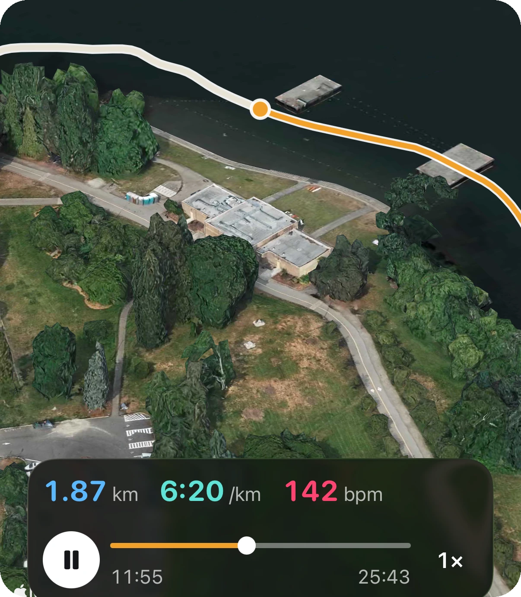

Comparison · Running

Three apps do it well on iPhone: Relive, Strava and Aera. Relive turns a run into a free 3D video story you can share, from almost any watch. Strava has Flyover, a 3D replay for its subscribers. Aera plays the run back over the real ground inside the app, with your distance, pace and heart rate running underneath, free for the last seven days and with no account. All three need a run with a GPS route; a treadmill run has nothing to fly over.
Athlytic also has a Workout Replay that plays a run, ride or hike back on the map. Its store page does not say it is in 3D, so it is not in the table.
| Relive | Strava Flyover | Aera Flyover | |
|---|---|---|---|
| What you get | A 3D video story to share | A 3D replay in the app, shareable to Instagram | A 3D replay in the app; an upright video with Premium |
| Your numbers on screen | Highlights such as top speed | Live stats on top | Distance, pace and heart rate the whole way; stops at fastest km and climb top |
| Where the route comes from | Phone, Apple Health, Garmin Connect, Suunto, Polar and more | Anything that syncs to Strava | Apple Health, Aera's own iPhone and Watch recording, or an exported file (Garmin, Polar, COROS, Suunto) |
| Account | Relive account | Strava account | None |
| Free | Basic video for each activity | No, subscribers only | Every run of the last 7 days |
| Price (US, 26 Nov 2026) | Relive Plus $6.99 or $38.99 in-app | $11.99/mo or $79.99/yr | Premium $8.99/mo or $39.99/yr, or pay once |
You want a video for Instagram with music and photos. Relive is built for that, and the basic video costs nothing. It also takes runs straight from Garmin Connect, Suunto and Polar.
You already pay for Strava. Flyover comes with it. Open the run in the Strava app and look for Flyover.
You run with an Apple Watch or your iPhone and want to watch the run again with your numbers. Aera plays it over the real ground in about a minute, with your pace and heart rate the whole way, and needs no account. The same app shows the run's splits and heart rate zones, and your sleep, HRV and body age.
Nothing stops you from using two. Relive and Strava both read the same run your watch saved, and so does Aera.
A run with a GPS route. An outdoor run, walk, hike or ride recorded with GPS. Treadmill runs, indoor rides and pool swims have no route, so no app can fly over them.
For Aera, the route in Apple Health or a file. Apple Watch outdoor workouts save their route in Apple Health. Garmin Connect writes runs to Apple Health without the route, so for a Garmin run you export the file and open it in Aera. That takes a minute and is explained in Replay a Garmin run in 3D.
Data for the map. All three draw satellite ground that loads over the internet. The replay is only as exact as the GPS that recorded it: between tall buildings or in thick forest the line can drift.
Aera, for iPhone and Apple Watch
Open a run in Aera and tap Flyover. The camera starts over the whole route, dips in behind you, rises before turns and stops for a moment at your fastest kilometre, the top of the biggest climb and any photo you took on the way. Distance, pace and heart rate run underneath, and you can skip along the timeline or play at double speed. The video version leaves out the start and end of the route, so nobody sees where you live.
There is no account, and your health numbers are worked out on your iPhone. Runs from the last 7 days replay free; older runs and the video are part of Premium.
Relive, Strava and Aera. Relive makes a free 3D video story, Strava's Flyover is for subscribers, and Aera's Flyover replays your run in the app with distance, pace and heart rate, free for the last seven days and with no account.
Yes. Relive's basic 3D video is free for each activity, and Aera's Flyover is free for every run of the last seven days. Strava's Flyover needs a subscription.
Yes. An outdoor run from the Apple Watch saves its GPS route in Apple Health, and Relive and Aera both read it from there. Aera plays it back over the real ground with your heart rate and pace.
Yes. Relive and Strava take it from Garmin Connect. In Aera you export the run's file from Garmin Connect and open it in the app, because Garmin sends runs to Apple Health without the route.
Related guides: Flyover in Aera · Replay a Garmin run in 3D · Plan a running route
 Or scan with your iPhone
Or scan with your iPhoneFree to start. No account. Works with the watch you already wear.